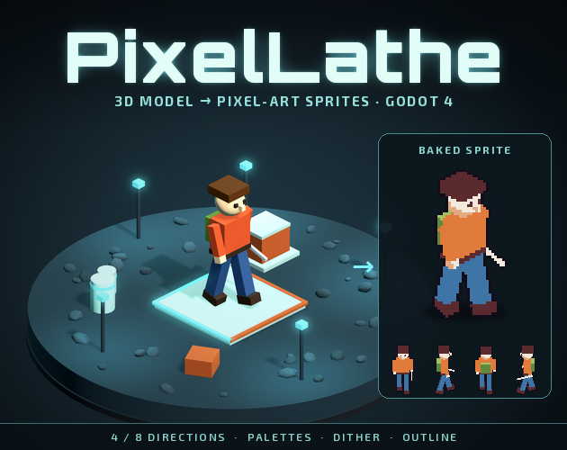
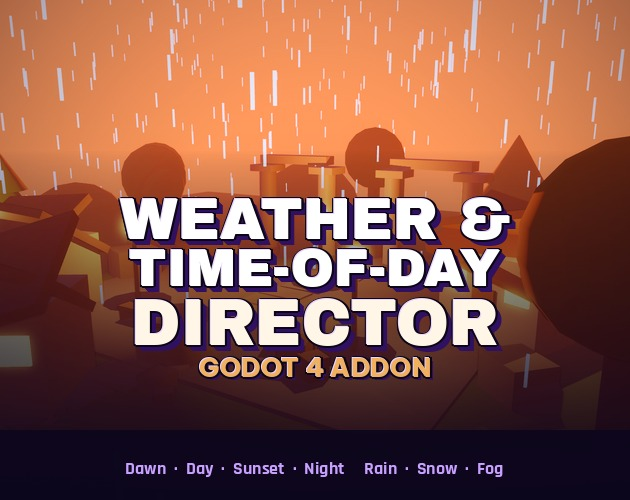
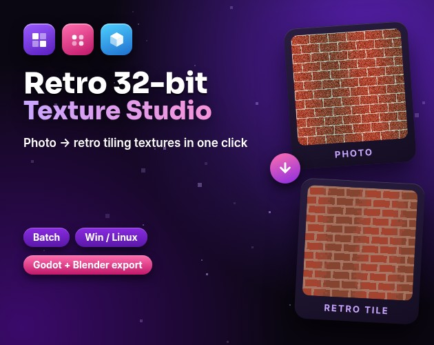
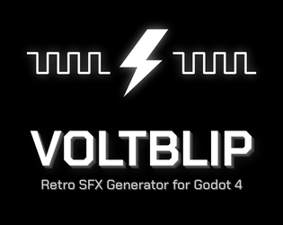

Tools

PixelLathe
Godot 4 plugin: turn a 3D model into pixel-art sprites in 4 or 8 directions, with a SpriteFrames export.
Get it on itch.io →
Weather & Time-of-Day Director
Godot 4 addon: day cycle and weather (rain, snow, fog) with a demo village scene.
Get it on itch.io →
Retro 32-bit Texture Studio
Photo to seamless retro textures: palettes, dithering, batch, Godot 4 + Blender material export. Windows and Linux.
Get it on itch.io →
Voltblip
Retro 8-bit sound effect generator for Godot 4: presets, seeds, 4-layer mixer, 16-step sequencer, WAV + .tres export. Try it in your browser.
Get it on itch.io →
Godot Map Forge: Normal, Height, AO & Roughness Maps for Godot 4
Get it on itch.io →
Pixmelt: Photo to Pixel Art Tool (Offline, Browser)
Get it on itch.io →
EffectDeck - Effects Stack for Aseprite
Get it on itch.io →